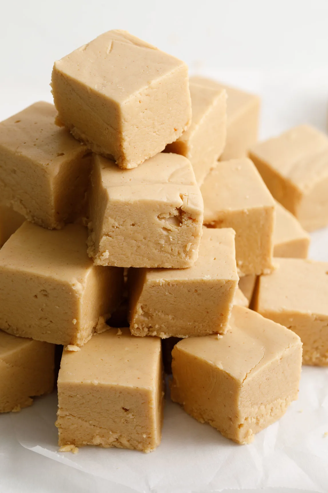
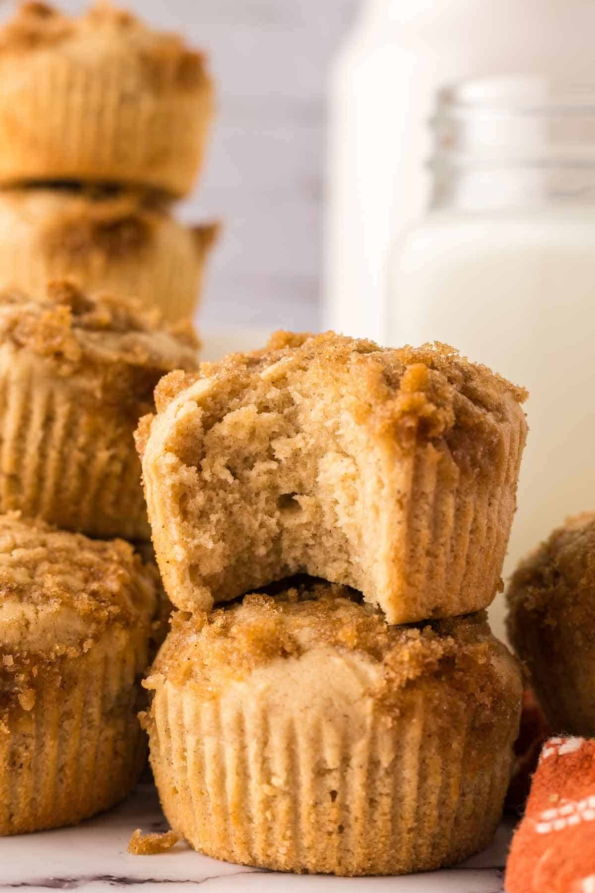
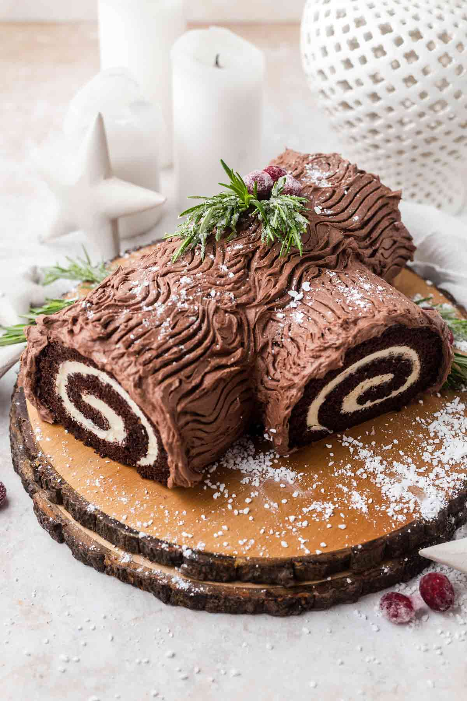
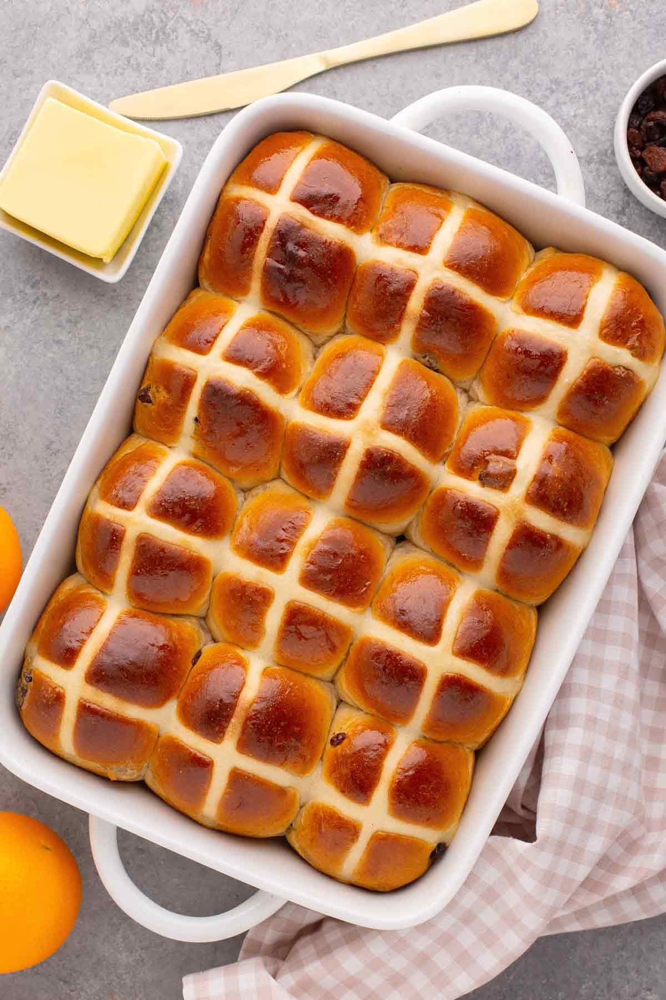
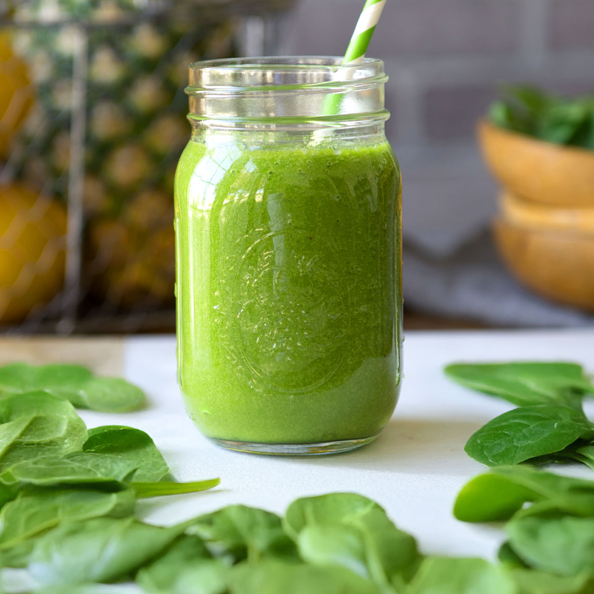

PEANUT BUTTER FUDGE
Ingredients
- Peanut Butter
- Granulated Sugar
- Milk
- Marshmallow creme
How to make peanut butter fudge
- Prepare an 8" x 8" pan with a foil or parchment paper lining.
- Next, measure the peanut butter and open the lid of the marshmallow creme.
- In a saucepan, bring sugar and milk to a boil.
- Boil for three minutes.
- Then add peanut butter and marshmallow creme.
- Mix well.
- Once combined, quickly pour it into the prepared pan.
- Transfer the pan to the refrigerator to chill until set, approximately one hour.
- Cut into one-inch squares.

CINNAMON MUFFINS
Ingredients
- ½ cup salted butter softened
- 1 cup light brown sugar divided
- 2 eggs
- 1 teaspoon vanilla extract
- 1 ¼ cup whole milk
- 3 cups all-purpose flour
- 1 tablespoon ground cinnamon
- 1 teaspoon baking soda
- 1 teaspoon baking powder
How to make muffins
- Preheat and prep pan. Preheat oven to 425°F and line a 12-count muffin tin with oil, butter, or liners.
- Make muffin batter. Using an electric mixer, cream together brown sugar and butter on medium-high speed until smooth and creamy.Add eggs, vanilla, and milk and mix until well combined. Reduce speed to low and mix in the flour, cinnamon, baking powder, and baking soda until the dry ingredients are just combined with the wet ingredients.
- Fill muffin tin. Scoop batter into each muffin cup, filling about ¾ full. Sprinkle a little bit of streusel over each muffin. Evenly distribute until all streusel topping is used.
- Bake. Move muffin pan to the oven and bake for 18-20 minutes or until a toothpick inserted into the center of a muffin comes out clean; then remove from oven.
- Cool. Allow muffins to cool in the pan for 5 minutes before removing then serve.

EASY CAKE MIX
Ingredients
- 6 eggs
- 13.25 oz box chocolate cake mix
- ⅓ cup water
- ¼ cup vegetable oil or canola
- 1 tablespoon powdered sugar
How to make Cake
- Preheat oven to 350ºF.
- Beat eggs. In a large bowl, beat eggs with an electric mixer for 5 minutes until frothy and pale yellow in color.
- Create batter. Add cake mix, water and oil and beat on low for 2 minutes.
- Prepare baking sheet. Line a baking pan with parchment paper or a silicon liner, then coat liner with baking spray. Make sure to grease sides of the baking sheet as well.
- Add batter to baking sheet. Pour batter onto prepared 12x18 baking sheet and spread evenly.
- Bake. Bake at 350˚F for 12-15 minutes or until a toothpick inserted into the center comes out clean.
- Let cool. As soon as toothpick comes out clean, remove from oven and let cool for at least 5 minutes, not more than 10.
- Release cake from pan. While the cake is still warm, grab a linen dish towel. Sprinkle both sides of the towel with powdered sugar to prevent cake from sticking to it then lay it on top of the cake. Holding the towel and pan together, gently flip the pan upside down so the cake drops onto the towel. Tap to release if needed.
- Roll cake. Peel parchment paper or silicon liner off of the cake. Then tightly but gently roll the cake, keeping the towel in place to separate the layers. Place the rolled cake, seam-side down, on a cooling rack and let cool for at least 15 minutes.
- Unroll and add filling. When cooled, gently unroll the cake and spread a layer of marshmallow frosting all the way to the edges. Gently but tightly roll cake back up to form a log. Place cake onto a serving dish, seam-side down.
- Garnish. Add fresh cranberries and rosemary or decorate your log. Or use your creativity to create a wintery scene using whatever decorative items you would like. Mushrooms and woodland creatures can be fun additions!

TRADITIONAL HOT CROSS BUNS
Ingredients
- 1 ¼ cup whole milk
- 2 ¼ teaspoon active dry yeast (1 packet)
- 4 ¼ cup all-purpose flour
- 1 ½ teaspoon salt
- ¼ cup + 2 teaspoons granulated sugar
- 1 teaspoon ground cinnamon
- ½ teaspoon ground nutmeg
- ¼ teaspoon ground cloves
- 4 tablespoon unsalted butter melted
- 1 egg at room temperature
- 1 cup currants
How to make traditional hot cross buns
- Activate yeast. Heat milk until warm (around 110ºF), about 1 minute in the microwave. Sprinkle in yeast and 2 teaspoons of sugar, stir to combine, allow to sit until foamy and yeast is activated, 3-4 minutes. Whisk in melted butter and egg, set aside.
- Make the dough. In a large bowl, whisk together the flour, sugar, salt, cinnamon, nutmeg, and cloves until well combined. Using an electric mixer with a dough hook attachment, add the milk mixture to flour mixture; mix on medium-low until dough begins to form, 1-2 minutes. Scrape down sides as needed and continue to knead dough until a smooth, slightly tacky dough is formed, 8-10 minutes.
- Knead the dough. Turn dough out onto a lightly floured surface. Knead in the currants, by adding ¼ cup of currants at a time, folding the dough in on itself to incorporate, 2-3 minutes.
- First rise. Place dough into a lightly greased bowl, cover, and rise for 1 ½ hours.
- Shape buns. Lightly grease a 9x13 inch baking dish with cooking spray. Turn dough out onto a lightly floured surface from bowl. Cut dough in half, then cut each half into 6 equal sized pieces, making 12 equal-sized pieces of dough.* Turn piece of dough in on itself toward the center, making a ball shape of dough. Place ball seam side down, cup hand and using a circular motion, roll dough against the surface until a taut ball of dough is formed.
- Second rise. Evenly space buns in prepared pan, cover, and allow to rise for 1 ½ hours.
- Make flour paste for crosses. In a small bowl, whisk together flour, sugar, and water, mixing until just combined and no lumps remain, 30-40 seconds.
- Preheat. 5-10 minutes before buns are ready to bake, preheat oven to 400ºF.
- Pipe crosses. Right before baking, pipe flour mixture evenly across the center of the 4 rows of buns, turn pan 90 degrees, then pipe mixture over the 3 long rows, forming a cross shape on each bun.
- Bake. Bake buns for 20 minutes, if buns are becoming too dark, tent with foil the final 5 minutes of baking.
- Serve. warm or cool completely then store in an airtight container.

HEALTHY GREEN SMOOTHIE
Ingredients
- 2 cups spinach
- 3 tablespoon almond butter
- 1 tablespoon chia seeds
- 2 green apples seeds removed, peeling optional
- 1 banana
- 1 cup frozen pineapple
- 1 ½ cups almond milk
How to make healthy green smoothie
- Add ingredients. Place ingredients in a food processor or blender.
- Blend. Blend for 1 minute or until smooth. Scrape down sides as needed.
- Serve. Pour into glasses and enjoy immediately.
